Scraping Ball-By-Ball Cricket Data With Yash Sakhuja
Hi all,
I am so pleased that Yash joins the site this week to talk through how to scrape cricket data. I met Yash just prior to his masters and to see how he has expanded his toolkit / techstack has been very admirable. I'm extra pleased that Yash gets to share his passion for cricket through the tutorial below, but first a few questions!
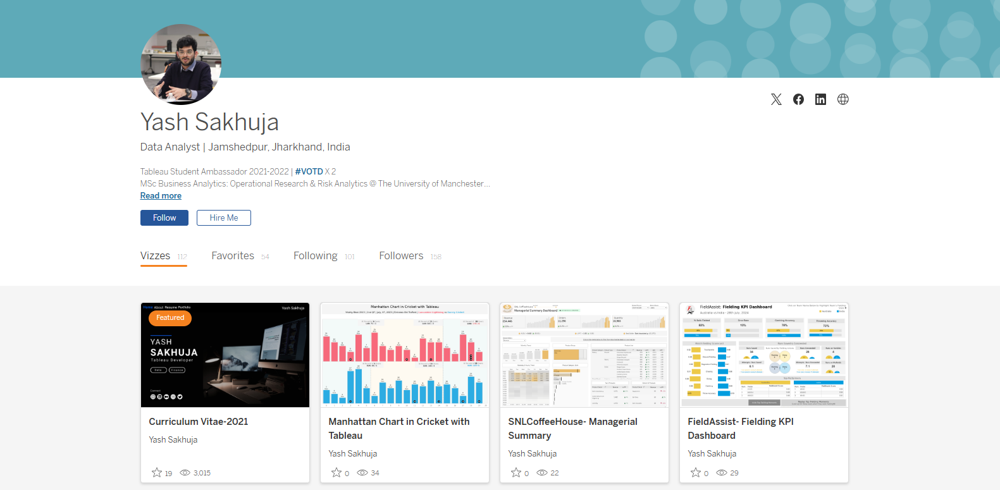
CJ: Yash, thanks for joining, for those that are unaware, could you tell us a little about your journey to date?
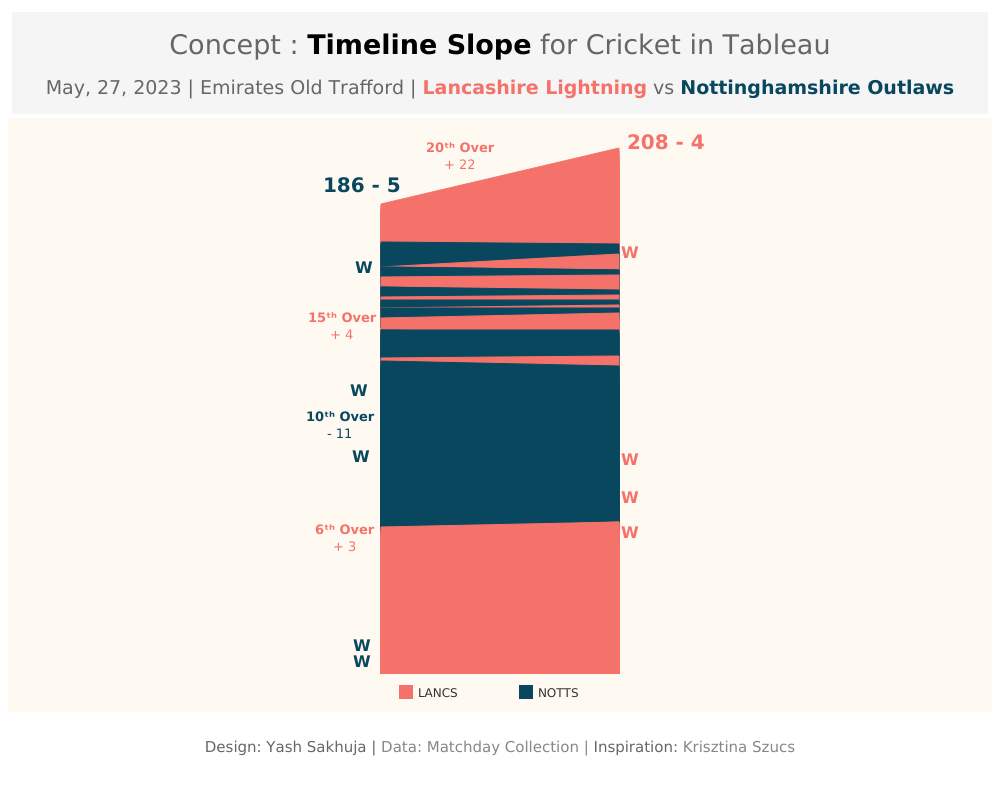
Yash: Thank you so much for having me. Firstly, I’d like to mention that It’s a pleasure to be featured on your blog, CJ. I truly admire your work and the impact you’ve made in the #datafam community. Talking about my journey, I was set on a path to becoming a "Man in Finance" with my choice of undergraduate degree, but data and Tableau found me just before the COVID lockdowns of 2020. During that time, Tableau and the #datafam community kept me sane as I participated in Makeover Mondays and Sports Viz Sundays, learning from every visualization I created.Consistency paid off, and my work started gaining attention. A turning point came when Rajeev Pandey, a key figure in the community, helped me land my first data role at Brandscapes Worldwide. This role offered a steep learning curve and exposure to diverse clients, from retail to healthcare.After completing my MSc in Business Analytics: Operational Research and Risk Analytics at The University of Manchester, I joined Performalytics, an Oxford-based consultancy firm. Now, I work with sustainable retail and sports clients, and in my free time, I love experimenting with Tableau, Python, ML and AI to keep learning and innovating.CJ: You became active in the community in 2020, and I’ve had the pleasure of seeing some of your sports analytics grow on your profile. What is it about the blend of sports and data you love?Yash: The core idea is that when you work on something you love, it feels more like fun than work. Growing up in India, I spent a lot of time playing and watching sports, especially cricket, since football timings weren't always ideal. This is where my passion for both sports and data truly intersected. I've always been more of a tactician than a player, so sports analytics felt a natural fit. What I find most empowering is that, with data and technology at our fingertips, we can stay one step ahead in the game, analyzing tactical decisions through the lens of data. There’s something uniquely satisfying about predicting something just before it happens or before experts/commentators mention it on air.CJ: Your cricket content has been a massive hit. You really bend tableau to use it in innovative ways, such as in the bowling spell and cricket pitch visuals. For someone that is new to cricket data, what are some data sources that you would recommend?
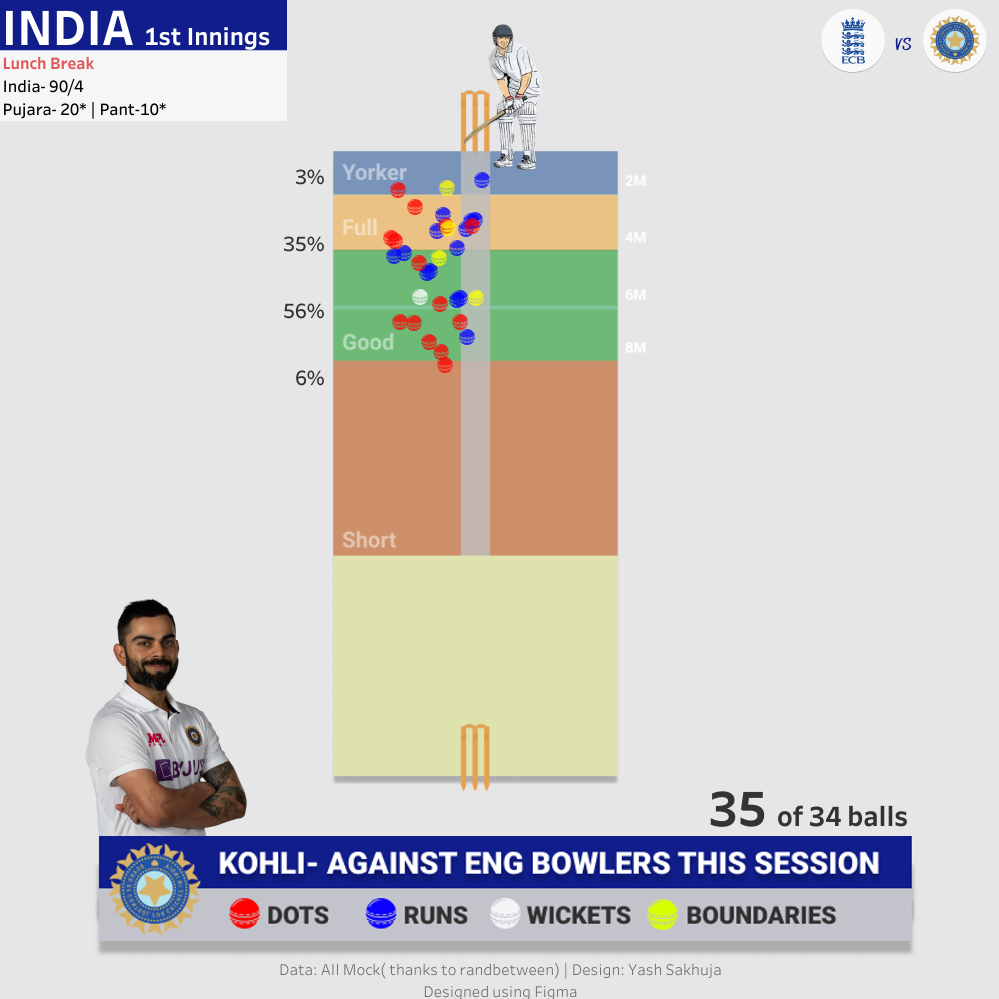
Yash: That's a great question. As a newcomer, I personally struggled to find structured data for cricket. Historically, structured cricket data hasn’t been as readily available as data for sports like football or baseball. However, things are improving with platforms like Cricsheet, making ball-by-ball cricket data much more accessible now.At an aggregated level, for player careers, team, and match records, I find Statsguru by ESPN Cricinfo to be useful, though it may require some data preparation. These are the two primary data sources I rely on, alongside scraping ball-by-ball cricket data for matches. I’ve provided a step-by-step guide on how to do this in this blog. Additionally, for true enthusiasts, there’s always a way of collecting data while watching the matches—though it requires a great deal of effort and dedication.CJ: I love that you have continued to blog about how to replicate some of your work in Tableau, such as the worm chart. Is there anyone else in the cricket analytics community, or wider sports community that you often learn from or go to for inspiration?Yash: When it comes to my inspiration in sports analytics, I truly believe you’ve played a key role in shaping it. Your work with football and tennis data has been incredibly inspiring, and your page is, without a doubt, the best resource for sports data enthusiasts. Participating in Sports Viz Sunday has also been crucial for connecting with the wider community, and I’m grateful for the learning from the works of Simon Beaumont, James Smith, Mo Wootten, Chris Westlake, Naresh Suglani and many more.As for my involvement in the cricket analytics community, I was fortunate to work with Lancashire County Cricket during my masters at Manchester, where I developed FieldAssist, a data collection and reporting tool for fielding data in cricket. This experience exposed me to a variety of coaches and performance analysts from different teams, allowing me to learn from their use of Tableau. Now, my blogs are aimed at helping them create both simple and complex cricket visualizations in Tableau. It’s incredibly rewarding to receive messages from them saying that my blog helped them do build something easily in Tableau.CJ: Recently, you blogged about how to create a Manhattan chart in Tableau. I love the step by step guide. You mention you scraped ball-by-ball data from the ESPN Cricinfo. Could you give us a walkthrough of what that looks like?Yash: Absolutely! I'd be happy to walk you through a step-by-step guide on how I scrape ball-by-ball cricket data from ESPN Cricinfo. I'll also share a framework and python code one can use to apply this process to any match to retrieve the data.Let’s begin by understanding what web scraping is. It’s a method used to extract data from websites. While manually copying and pasting data is an option, it’s often tedious and time-consuming. Web scraping automates this process, making data extraction more efficient and streamlined.Almost all websites are built using HTML tags and attributes. So, before diving into web scraping, it's important to understand the basics of these tags and attributes, which are crucial for extracting data from websites. This hour-long video on Web Scraping by Priyanka Dobhal is an excellent resource for learning how HTML tags and attributes work and is a great starting point for beginners. I recommend that readers watch this video to gain a deeper understanding of how my scraping method works under the hood.To extract ball-by-ball scores and commentary data from ESPN Cricinfo, I follow a four-step process, which I have outlined in this blog. Before you begin executing these four steps, it would be helpful to clone this GitHub Repository and try to replicate the code on your end.
The four step scraping process:
Locate and save the webpage.
Inspect the web structure and create element list
scraping the data (scraper.py)
cleaning the data (scraped_data_cleaning.ipynb)
Let's walk through each part.
Locate and save the webpage
First, navigate to the specific match or series page on ESPN Cricinfo, where the ball-by-ball commentary is available. Make sure you select the Commentary tab for the match, as shown in the image below. Then, choose the innings you want to extract data for by selecting the batting team from the dropdown list.P.S. This process needs to be done one innings at a time, as both innings commentary is stored under the same link but displayed under different dropdown selections.
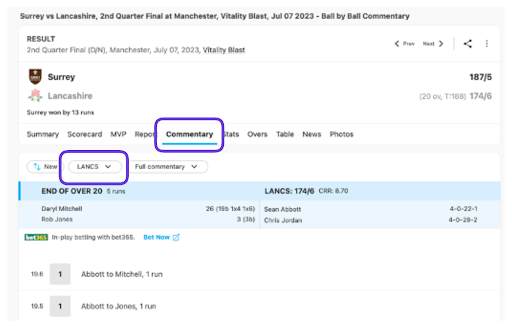
Next, scroll down to the section of the page showing the details of the first ball of the innings to ensure the entire webpage has loaded. Then, save the webpage by pressing Ctrl+S (or Cmd+S on a Mac). Rename the file for easy identification of the corresponding innings and save it in the HTML Links folder within the appropriate match folder. Afterward, change the dropdown selection for the batting team and repeat the process to save the HTML file for the other innings. With the HTML files now organized, we can move on to the next step, where we will inspect the files and begin extracting the necessary information.2. Inspect the Web Structure and Create the Element ListWhen examining how the commentary and scores are displayed, there are four key elements we need to extract: the Over, the Result, the Commentary, and the Fall of Wicket (FoW) (for wicket deliveries), as shown in the image below.It's also important to note that the boxes have different colors for various events—red for Wickets, green for Boundaries, purple for Sixes, and translucent for other results. These color differences influence how they are represented in the HTML code.The next steps involve revisiting the webpage, right-clicking on the elements you want to extract and selecting the "Inspect" option. This will open the Developer Tools panel on the right side of the window, allowing you to examine how these elements are structured in the HTML layout.
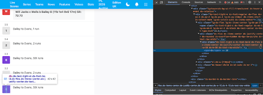
Refer to the video I mentioned earlier for a more detailed explanation of this process. For our purposes, the elements we need are structured within <div> or <span> classes, as highlighted in the table and snippets below.
Element
Tags/Attributes
Over and Ball
<span> Class
Result
Outermost <div> class
Commentary
Outermost <div> class
FoW
Outermost <div> class
<span> class for Over and Ball
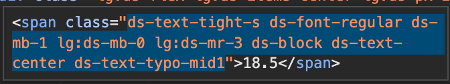
Outermost <div> class for Results
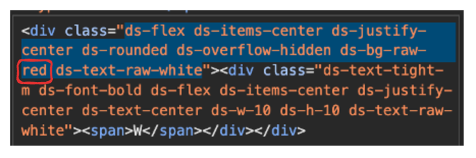
Outermost <div> class for Commentary
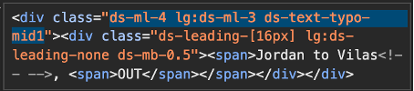
Outermost <div> class for FoW
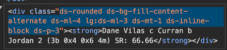
Finally, we organize the extracted elements into a CSV file, including the batting team to indicate which HTML file the data came from, and linking each field to its corresponding <div> or <span> class. Wicket balls, 4s, 6s, and other deliveries are listed as separate fields because they are enclosed within outer <div> boxes of different colors, which means their HTML coding slightly varies. After compiling the CSV, save it in the Element List folder with an appropriate file name for easy identification.Note: Always double-check and inspect the elements before moving to the next steps, as tags and attributes can vary depending on the website's design and structure, which may differ slightly for certain elements. For example, check how in the snippet below the FoW <div> class has subtle differences between the two innings.
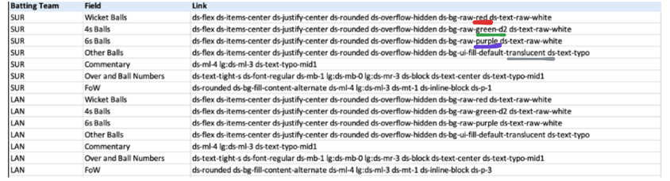
3. Scraping with scraper.pyOnce you've generated the HTML files and the element list, it's time to run the 100-line scraper.py code. This script combines both inputs and uses the element list to extract the necessary data from the HTML files.Before running the code, make sure to update the necessary details (highlighted in green) in the first few lines of the scraper.py code based on the specific match you are extracting data for and with urls of where your element list and html files are saved.
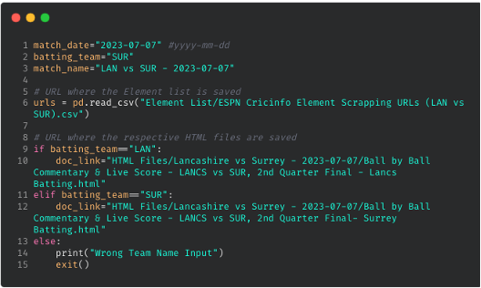
Here’s a code snippet for extracting elements using HTML tags and attributes. To view the complete code, click here. The extracted data is stored in lists and then exported as CSV and JSON format within the "scraped Data" folder, under the corresponding match-specific sub-folder.
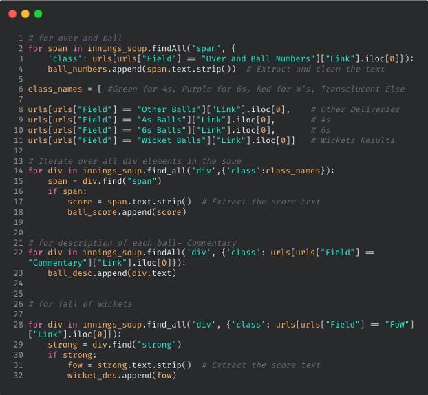
After running the scraper.py, the output CSV will be generated in the following format, with one file for each innings. Please, note that you would need to run this code twice, once for each innings, after changing relevant information.
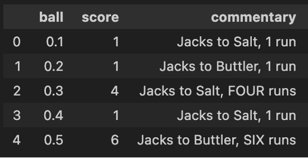
Here’s a brief overview of how the code in scraper.py is structured and the sequence of operations it performs to scrape the necessary data:
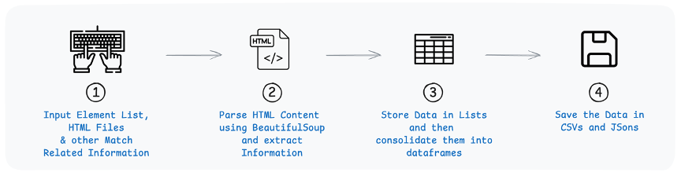
Data Cleaning with scraped_data_cleaning.ipynb
In the two Tableau blogs that I wrote for building a Worm Chart and aManhattan Chart, I pulled the data into Tableau in the format as shown below:
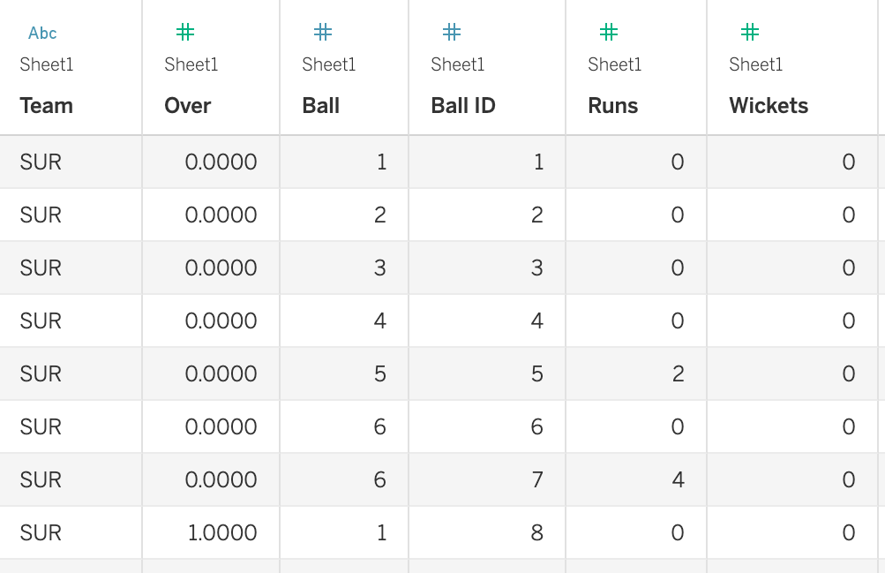
To structure our scraped output, I’ve also created a Jupyter Notebook file in the repository. By pointing to the two extracted CSVs and modifying a few match-related details (as highlighted in green in the code shown below), you can clean the data and process it using basic pandas operations in Python, making it ready for visualization and analysis in Tableau.
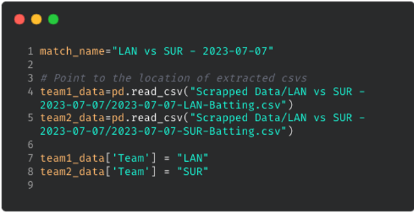
In the GitHub repository for this scraping project, I've included the HTML files and an Element List for an additional match (RCB vs SRH - 2024-03-30), along with the corresponding outputs. Additionally, I’ve provided HTML files for a more recent T10 fixture (Deccan Gladiators vs Team Abu Dhabi T10 - 2024-11-23) for those interested in trying it out.Thanks for your time, CJ. I hope the readers find this helpful and I’m also excited to see the community expand on this, such as exploring how this approach works for different formats of the game. If anyone has any questions or ideas for improvements, feel free to reach out to me on my socials & my blog here. Cheers, Yash.LOGGING OFF,
CJ
 Yash: The core idea is that when you work on something you love, it feels more like fun than work. Growing up in India, I spent a lot of time playing and watching sports, especially cricket, since football timings weren't always ideal. This is where my passion for both sports and data truly intersected.
I've always been more of a tactician than a player, so sports analytics felt a natural fit. What I find most empowering is that, with data and technology at our fingertips, we can stay one step ahead in the game, analyzing tactical decisions through the lens of data. There’s something uniquely satisfying about predicting something just before it happens or before experts/commentators mention it on air.
CJ: Your cricket content has been a massive hit. You really bend tableau to use it in innovative ways, such as in the bowling spell and cricket pitch visuals. For someone that is new to cricket data, what are some data sources that you would recommend?
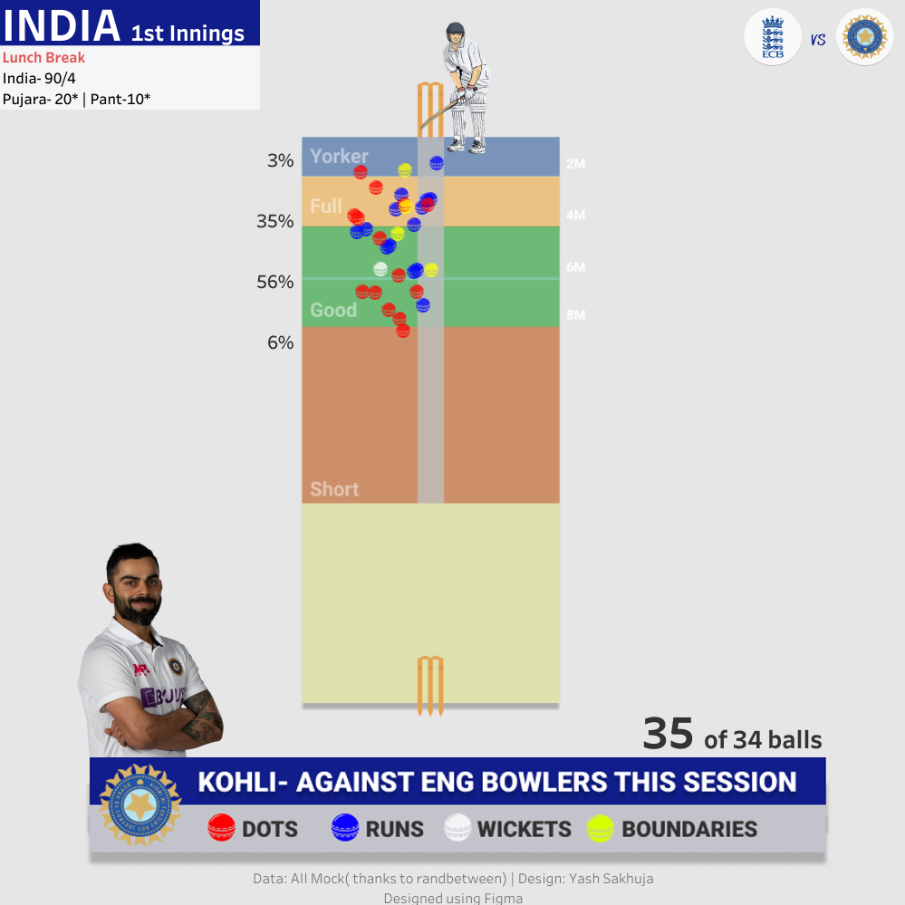
Yash: That's a great question. As a newcomer, I personally struggled to find structured data for cricket. Historically, structured cricket data hasn’t been as readily available as data for sports like football or baseball. However, things are improving with platforms like Cricsheet, making ball-by-ball cricket data much more accessible now.
At an aggregated level, for player careers, team, and match records, I find Statsguru by ESPN Cricinfo to be useful, though it may require some data preparation. These are the two primary data sources I rely on, alongside scraping ball-by-ball cricket data for matches. I’ve provided a step-by-step guide on how to do this in this blog. Additionally, for true enthusiasts, there’s always a way of collecting data while watching the matches—though it requires a great deal of effort and dedication.
CJ: I love that you have continued to blog about how to replicate some of your work in Tableau, such as the worm chart. Is there anyone else in the cricket analytics community, or wider sports community that you often learn from or go to for inspiration?
Yash: When it comes to my inspiration in sports analytics, I truly believe you’ve played a key role in shaping it. Your work with football and tennis data has been incredibly inspiring, and your page is, without a doubt, the best resource for sports data enthusiasts. Participating in Sports Viz Sunday has also been crucial for connecting with the wider community, and I’m grateful for the learning from the works of Simon Beaumont, James Smith, Mo Wootten, Chris Westlake, Naresh Suglani and many more.
As for my involvement in the cricket analytics community, I was fortunate to work with Lancashire County Cricket during my masters at Manchester, where I developed FieldAssist, a data collection and reporting tool for fielding data in cricket. This experience exposed me to a variety of coaches and performance analysts from different teams, allowing me to learn from their use of Tableau. Now, my blogs are aimed at helping them create both simple and complex cricket visualizations in Tableau. It’s incredibly rewarding to receive messages from them saying that my blog helped them do build something easily in Tableau.
CJ: Recently, you blogged about how to create a Manhattan chart in Tableau. I love the step by step guide. You mention you scraped ball-by-ball data from the ESPN Cricinfo. Could you give us a walkthrough of what that looks like?
Yash: The core idea is that when you work on something you love, it feels more like fun than work. Growing up in India, I spent a lot of time playing and watching sports, especially cricket, since football timings weren't always ideal. This is where my passion for both sports and data truly intersected.
I've always been more of a tactician than a player, so sports analytics felt a natural fit. What I find most empowering is that, with data and technology at our fingertips, we can stay one step ahead in the game, analyzing tactical decisions through the lens of data. There’s something uniquely satisfying about predicting something just before it happens or before experts/commentators mention it on air.
CJ: Your cricket content has been a massive hit. You really bend tableau to use it in innovative ways, such as in the bowling spell and cricket pitch visuals. For someone that is new to cricket data, what are some data sources that you would recommend?
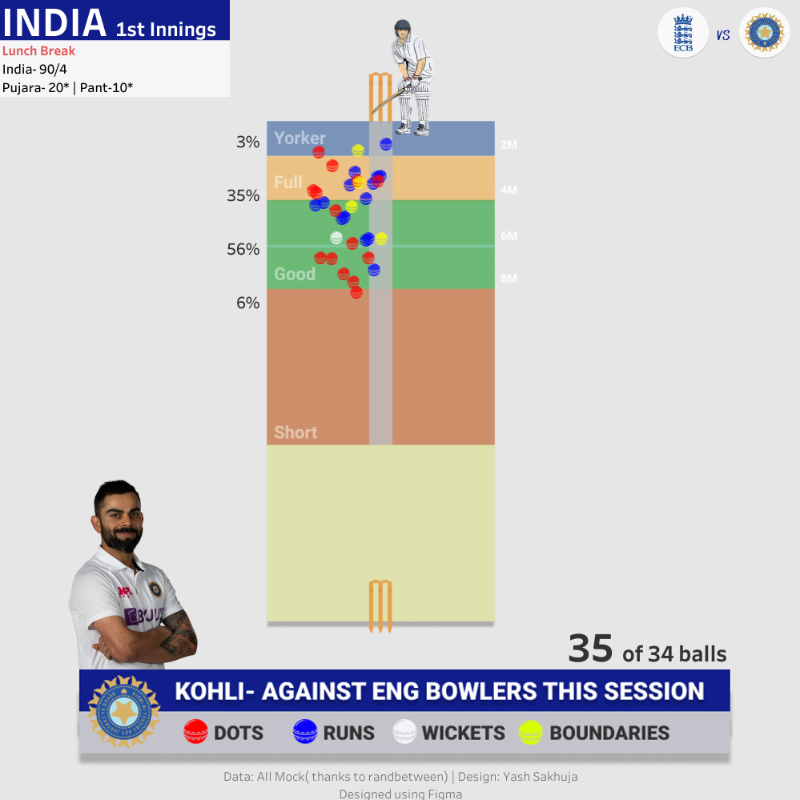
Yash: That's a great question. As a newcomer, I personally struggled to find structured data for cricket. Historically, structured cricket data hasn’t been as readily available as data for sports like football or baseball. However, things are improving with platforms like Cricsheet, making ball-by-ball cricket data much more accessible now.
At an aggregated level, for player careers, team, and match records, I find Statsguru by ESPN Cricinfo to be useful, though it may require some data preparation. These are the two primary data sources I rely on, alongside scraping ball-by-ball cricket data for matches. I’ve provided a step-by-step guide on how to do this in this blog. Additionally, for true enthusiasts, there’s always a way of collecting data while watching the matches—though it requires a great deal of effort and dedication.
CJ: I love that you have continued to blog about how to replicate some of your work in Tableau, such as the worm chart. Is there anyone else in the cricket analytics community, or wider sports community that you often learn from or go to for inspiration?
Yash: When it comes to my inspiration in sports analytics, I truly believe you’ve played a key role in shaping it. Your work with football and tennis data has been incredibly inspiring, and your page is, without a doubt, the best resource for sports data enthusiasts. Participating in Sports Viz Sunday has also been crucial for connecting with the wider community, and I’m grateful for the learning from the works of Simon Beaumont, James Smith, Mo Wootten, Chris Westlake, Naresh Suglani and many more.
As for my involvement in the cricket analytics community, I was fortunate to work with Lancashire County Cricket during my masters at Manchester, where I developed FieldAssist, a data collection and reporting tool for fielding data in cricket. This experience exposed me to a variety of coaches and performance analysts from different teams, allowing me to learn from their use of Tableau. Now, my blogs are aimed at helping them create both simple and complex cricket visualizations in Tableau. It’s incredibly rewarding to receive messages from them saying that my blog helped them do build something easily in Tableau.
CJ: Recently, you blogged about how to create a Manhattan chart in Tableau. I love the step by step guide. You mention you scraped ball-by-ball data from the ESPN Cricinfo. Could you give us a walkthrough of what that looks like?
 Yash: Absolutely! I'd be happy to walk you through a step-by-step guide on how I scrape ball-by-ball cricket data from ESPN Cricinfo. I'll also share a framework and python code one can use to apply this process to any match to retrieve the data.
Let’s begin by understanding what web scraping is. It’s a method used to extract data from websites. While manually copying and pasting data is an option, it’s often tedious and time-consuming. Web scraping automates this process, making data extraction more efficient and streamlined.
Almost all websites are built using HTML tags and attributes. So, before diving into web scraping, it's important to understand the basics of these tags and attributes, which are crucial for extracting data from websites. This hour-long video on Web Scraping by Priyanka Dobhal is an excellent resource for learning how HTML tags and attributes work and is a great starting point for beginners. I recommend that readers watch this video to gain a deeper understanding of how my scraping method works under the hood.
To extract ball-by-ball scores and commentary data from ESPN Cricinfo, I follow a four-step process, which I have outlined in this blog. Before you begin executing these four steps, it would be helpful to clone this GitHub Repository and try to replicate the code on your end.
The four step scraping process:
Yash: Absolutely! I'd be happy to walk you through a step-by-step guide on how I scrape ball-by-ball cricket data from ESPN Cricinfo. I'll also share a framework and python code one can use to apply this process to any match to retrieve the data.
Let’s begin by understanding what web scraping is. It’s a method used to extract data from websites. While manually copying and pasting data is an option, it’s often tedious and time-consuming. Web scraping automates this process, making data extraction more efficient and streamlined.
Almost all websites are built using HTML tags and attributes. So, before diving into web scraping, it's important to understand the basics of these tags and attributes, which are crucial for extracting data from websites. This hour-long video on Web Scraping by Priyanka Dobhal is an excellent resource for learning how HTML tags and attributes work and is a great starting point for beginners. I recommend that readers watch this video to gain a deeper understanding of how my scraping method works under the hood.
To extract ball-by-ball scores and commentary data from ESPN Cricinfo, I follow a four-step process, which I have outlined in this blog. Before you begin executing these four steps, it would be helpful to clone this GitHub Repository and try to replicate the code on your end.
The four step scraping process:
 The next steps involve revisiting the webpage, right-clicking on the elements you want to extract and selecting the "Inspect" option. This will open the Developer Tools panel on the right side of the window, allowing you to examine how these elements are structured in the HTML layout.
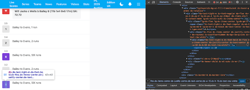
Refer to the video I mentioned earlier for a more detailed explanation of this process. For our purposes, the elements we need are structured within <div> or <span> classes, as highlighted in the table and snippets below.
The next steps involve revisiting the webpage, right-clicking on the elements you want to extract and selecting the "Inspect" option. This will open the Developer Tools panel on the right side of the window, allowing you to examine how these elements are structured in the HTML layout.
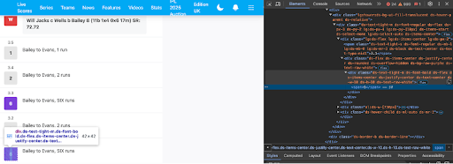
Refer to the video I mentioned earlier for a more detailed explanation of this process. For our purposes, the elements we need are structured within <div> or <span> classes, as highlighted in the table and snippets below.